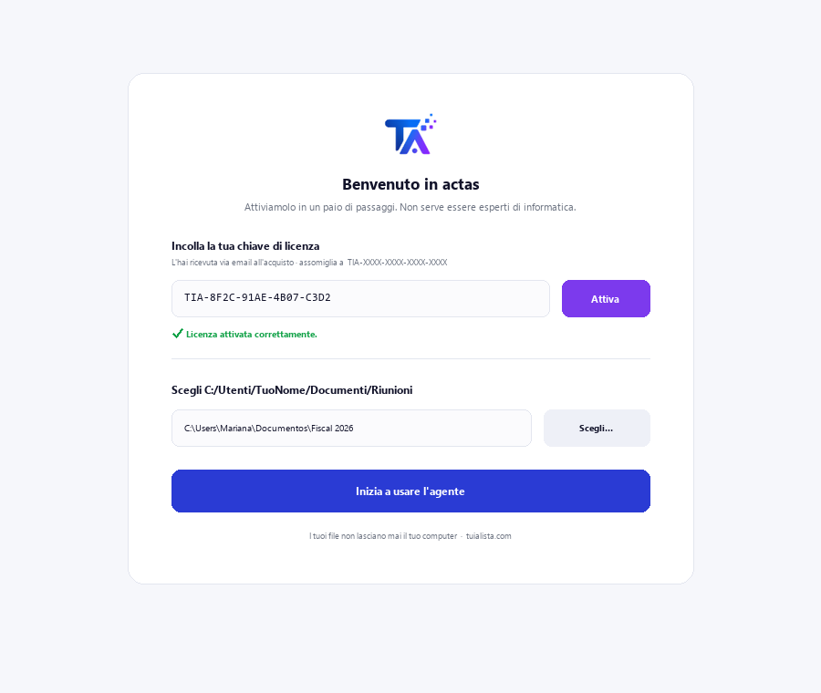
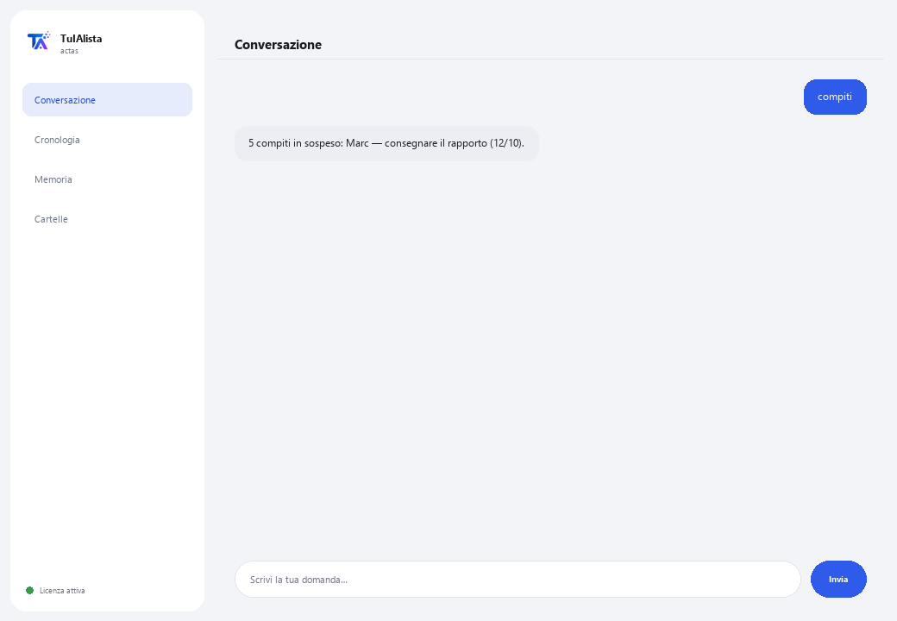

Agente Verbali e Riunioni
Trasforma le tue note delle riunioni in verbali chiari ed estrae automaticamente le decisioni e i compiti.
Cosa risolve e cosa ti serve?
In quasi tutte le riunioni si decidono cose e si distribuiscono compiti, ma poi nessuno scrive un verbale ordinato e le decisioni si perdono. Questo agente legge le tue note o trascrizioni e prepara il verbale, estrae compiti con responsabile e data, e rileva quali compiti di riunioni passate potrebbero cadere nel dimenticatoio.
- Ti serve: la tua chiave di licenza (TIA-XXXX-XXXX-XXXX-XXXX) e la cartella con le tue note delle riunioni. Niente Python né conoscenze tecniche.
- Primo risultato in meno di 5 minuti: installi, attivi, scegli la tua cartella ed esegui verbale <file> per il tuo primo verbale pronto.
- Le tue note non lasciano mai il tuo computer — la lettura gira in locale.
soporte@tuialista.com o visita tuialista.com/soporte — di solito rispondiamo lo stesso giorno lavorativo.1 Cosa fa questo agente
Gli indichi la cartella con le tue note o trascrizioni di riunioni e lui:
- Le legge tutte (testo, Markdown, Word e PDF), senza che tu debba aprirle.
- Genera un verbale strutturato: titolo, data, partecipanti, argomenti, decisioni e compiti.
- Estrae i compiti e impegni con il loro responsabile e scadenza quando appaiono.
- Separa chiaramente le decisioni già prese dai compiti futuri.
- Consolida i compiti in sospeso di tutte le riunioni e rileva il follow-up: compiti passati che potrebbero essere ancora aperti.
- Risponde alle tue domande su quanto discusso: “cosa si è deciso sul budget?”
Risultato: esci da ogni riunione con un verbale pronto e una lista di compiti chiara, senza dedicare tempo a scriverla.
2 Installazione (2 minuti)
Per Windows. Non serve internet permanente né caricare nulla sul cloud.
Scarica l'installer da tuialista.com/descargar (agente Verbali) e aprilo. Crea un collegamento sul desktop con il logo — non richiede Python né terminale.
Doppio clic sulla nuova icona. Incolla la tua chiave di licenza (ricevuta via email all'acquisto) e premi Attiva. Vedrai un segno di spunta verde quando è valida.
Seleziona la cartella con le tue note delle riunioni e premi Inizia a usare l'agente. La prossima volta si avvia direttamente — ricorda la tua chiave e la tua cartella.

3 Come usarlo
L'agente apre una finestra di chat, come un'app di messaggistica — non è uno schermo nero da programmatore. Scrivi il tuo comando o la tua domanda nella casella di testo in basso, premi Invia (o Invio), e la risposta appare come un messaggio, proprio come in questa immagine reale:

I comandi seguenti sono le parole che puoi scrivere nella stessa casella di testo:
> verbale <file>Verbale strutturato di quella riunione: titolo, data, partecipanti, argomenti trattati, decisioni, compiti (con responsabile e scadenza) e prossimi passi.
> compitiConsolida i compiti di tutte le riunioni indicizzate, ordinati per scadenza.
> decisioni <file>Solo le decisioni/accordi concreti di una riunione, senza i compiti futuri.
> follow-upCompiti di riunioni passate che potrebbero essere ancora aperti (senza data o con data scaduta), perché nulla venga dimenticato.
> riepilogo <file>Riepilogo esecutivo breve (max. ~150 parole) per chi non ha partecipato: cosa si è discusso, cosa si è deciso e le prossime azioni.
> domanda libera?Scrivi la tua domanda e l'agente cerca nella cronologia delle riunioni, es.: cosa si è deciso sul lancio di luglio?
> esciTermina la sessione (funziona anche exit).
4 Esempi di uso comune
Verbale pronto alla fine della riunione
Salvi le tue note grezze e verbale riunione-di-oggi.txt — ottieni il verbale strutturato da condividere con il team.
Rivedere i pendenti prima della prossima riunione
compiti — arrivi con l'elenco consolidato di impegni e responsabili.
Recuperare compiti che si stavano perdendo
follow-up — rileva ciò che è rimasto di riunioni precedenti ed è ancora aperto.
Aggiornare qualcuno che era assente
riepilogo riunione-strategia.docx
5 Domande frequenti
Le mie note vengono caricate su internet?
Ho bisogno di internet per usarlo?
Quali formati accetta?
Come rileva i compiti e i responsabili?
Come conosce la data della riunione?
In quale lingua mi risponde?
Legge un PDF scansionato?
Posso cambiare la cartella delle riunioni?
I verbali sono 100% esatti?
Conserva la cronologia tra le sessioni?
6 Risoluzione dei problemi
Non legge un .docx o .pdf
Mostra “0 riunioni indicizzate”
Mostra “Licenza non valida” o chiede di riconnettersi
“Nessun fornitore IA configurato”
Nessuna di queste soluzioni ha risolto il tuo problema? Scrivici direttamente — saremo felici di rivederlo con te.
soporte@tuialista.com o visita tuialista.com/soporte — di solito rispondiamo lo stesso giorno lavorativo.7 Privacy e riservatezza
Le tue note delle riunioni non lasciano mai il tuo computer.
- L'agente legge e indicizza i file in locale, sul tuo stesso dispositivo. Non li carica su nessun server.
- Il rilevamento locale di compiti, date e partecipanti avviene sul tuo dispositivo.
- L'unica cosa che viaggia su internet è: (1) una verifica che la tua licenza sia attiva — che non include il contenuto delle tue note —, e (2) quando generi un verbale, riepilogo o domanda, viene inviato un frammento del testo al motore IA per redigere la risposta.